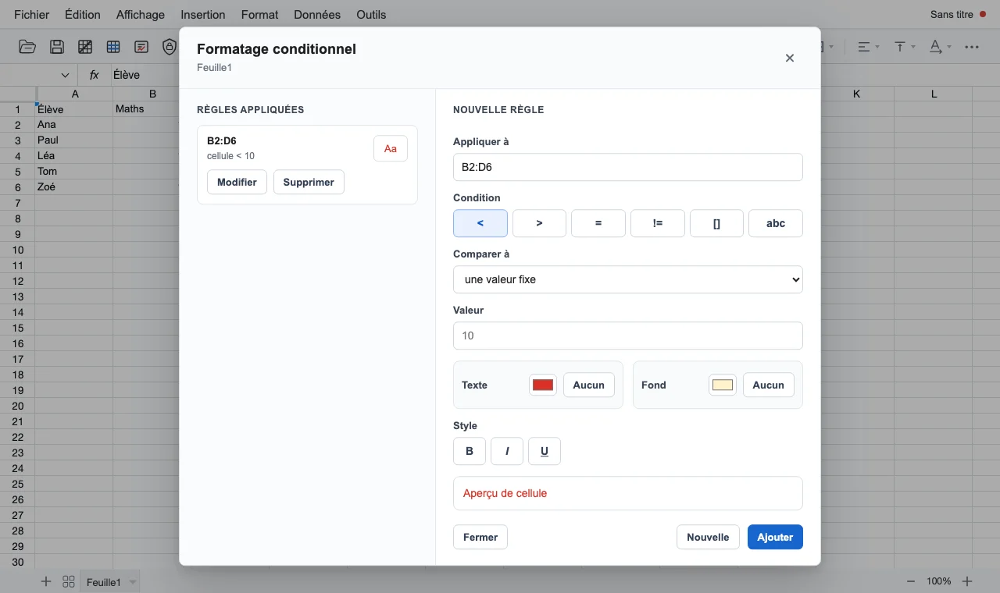

Formatage conditionnel
Une règle change l’apparence des cellules d’une plage qui remplissent une condition. Elle suit les valeurs, saisies ou calculées.
Créer une règle
- Sélectionner la plage, sans son en-tête.
- ou Format › Formatage conditionnel.
- Choisir la condition, la valeur à comparer, les couleurs ou le style.
- Ajouter.

| Condition | La cellule |
|---|---|
< | est inférieure à |
> | est supérieure à |
= | est égale à |
!= | est différente de |
[] | est comprise entre deux valeurs, bornes comprises |
abc | contient un texte, majuscules indifférentes |
À quoi comparer
| Comparer à | Exemple |
|---|---|
| une valeur fixe | les notes inférieures à 10 |
| une cellule fixe | les notes inférieures au seuil écrit en F1 |
| une colonne même ligne | en colonne C, les valeurs supérieures à celles de la colonne B, ligne par ligne |
Apparence
Texte et Fond choisissent les couleurs, Aucun les retire ; B, I, U mettent en gras, italique, souligné. Il faut au moins une couleur ou un style.
Plusieurs règles
La colonne de gauche liste les règles de la feuille : Modifier, Supprimer. Si plusieurs règles s’appliquent à une cellule, la dernière de la liste l’emporte, couleur par couleur.
Dans une plage couverte par une règle, la couleur du texte et du fond donnée directement aux cellules n’est plus affichée.
Les règles sont enregistrées dans le fichier Excel comme mises en forme conditionnelles d’Excel.